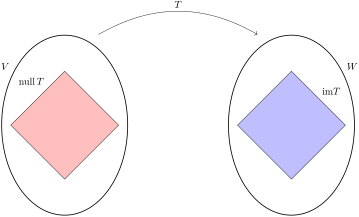
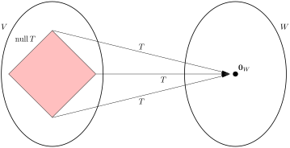
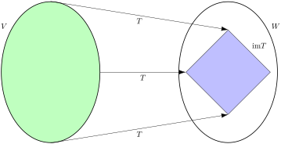

Having introduced linear transformations, we now begin to investigate them as important mathematical objects in their own right. In this section we introduce two subspaces associated to a linear transformation \(T\colon V\rightarrow W\) that will aid this investigation. These are the null space and image of a transformation.
SubsectionDefinition and examples
Definition1.10.1.Null space and image.
Let \(T\colon V\rightarrow W\) be a linear transformation.
Null space of \(T\).
The null space of \(T\) is the subset \(\NS T\) of \(V\) defined as
The image (or range) of \(T\) is the subset \(\im T\) of \(W\) defined as
\begin{equation}
\im T=\{w\in W\colon w=T(v) \text{ for some } v\in V\}\text{.}\tag{1.26}
\end{equation}
Remark1.10.2.Null space and image.
We gather a few simple observations about the null space and image of a linear map \(T\colon V\rightarrow W\)
Let \(T\colon V\rightarrow W\text{.}\) It is useful to keep in mind where \(\NS T\) and \(\im T\) “live” in this picture: we have \(\NS T\subseteq V\) and \(\im T\subseteq W\text{.}\) In other words, the null space is a subset of the domain, and the image is a subset of the codomain. See Figure 1.10.3.
Note that the image \(\im T\) of a linear transformation is just its image when considered simply as a function of sets. (See Definition 0.1.17.)
The notion of a null space is analogous to the set of zeros (or roots) of a real-valued function \(f\colon X\rightarrow \R\text{,}\)
and “the zeros of \(T\)” is a useful English shorthand for \(\NS T\text{.}\) However, there is an important difference between the null space of a linear transformation and the zeros of an arbitrary real-valued function: the null space of a linear transformation comes with the added structure of a vector space (Theorem 1.10.4), whereas the zeros of an arbitrary function in general do not.
The same observation can be made about the image of a linear transformation (Theorem 1.10.4), in comparison to the image of an arbitrary function.
(a)Null space lives in the domain; image lives in the codomain.
(b)The entire null space gets mapped to \(\boldzero_W\text{.}\)
(c)The entire domain is mapped to \(\im T\text{.}\)
Figure1.10.3.Null space and image
Before getting to examples we make official what we hinted at above: the null space and image of a linear transformation are subspaces.
Theorem1.10.4.Null space and image.
If \(T\colon V\rightarrow W\) is a linear transformation, then \(\NS T\) is a subspace of \(V\text{,}\) and \(\im T\) is a subspace of \(W\text{.}\)
Proof.
Null space of \(T\).
We use the two-step technique to prove \(\NS T\) is a subspace.
Since \(T(\boldzero_V)=\boldzero_W\) (Theorem 1.9.9), we see that \(\boldzero_V\in \NS T\text{.}\)
Suppose \(\boldv_1, \boldv_2\in \NS T\text{.}\) Given any \(c,d\in \R\text{,}\) we have
This shows that \(c\boldv_1+d\boldv_2\in \NS T\text{,}\) completing our proof.
Image of \(T\).
The proof proceeds in a similar manner, using the two-step technique.
Since \(T(\boldzero_V)=\boldzero_W\) (Theorem 1.9.9), we see that \(\boldzero_W\) is “hit” by \(T\text{,}\) and hence is a member of \(\im T\text{.}\)
Assume vectors \(\boldw_1, \boldw_2\in W\) are elements of \(\im T\text{.}\) By definition, this means there are vectors \(\boldv_1, \boldv_2\in V\) such that \(T(\boldv_i)=\boldw_i\) for \(1\leq i\leq 2\text{.}\) Now given any linear combination \(\boldw=c\boldw_1+d\boldw_2\text{,}\) we have
This shows that for any linear combination \(\boldw=c\boldw_1+d\boldw_2\text{,}\) there is an element \(\boldv=c\boldv_1+d\boldv_2\) such that \(T(\boldv)=\boldw\text{.}\) We conclude that if \(\boldw_1, \boldw_2\in \im T\text{,}\) then \(\boldw=c\boldw_1+d\boldw_2\in \im T\) for any \(c,d\in \R\text{,}\) as desired.
Example1.10.5.
Define \(S\colon F^{n,n}\rightarrow F^{n,n}\) as \(S(A)=A^T-A\text{.}\)
Prove that \(S\) is linear.
Identify \(\NS S\) as a familiar matrix subspace.
Identify \(\im S\) as a familiar matrix subspace.
Solution.
Linearity is an easy consequence of transpose properties. For any \(A_1, A_2\in F^{n,n}\) and \(c_1,c_2\in F\text{,}\) we have
Thus \(\NS F\) is the subspace of symmetric \(n\times n\) matrices!
Let \(W=\{B\in F^{n,n}\colon B^T=-B\}\text{,}\) subspace of skew-symmetric \(n\times n\) matrices. We claim \(\im S=W\text{.}\) As this is a set equality, we prove it by showing the two set inclusions \(\im S\subseteq W\) and \(W\subseteq \im S\text{.}\) (See Basic set properties)
The inclusion \(\im S\subseteq W\) is the easier of the two. If \(B\in \im S\text{,}\) then \(B=S(A)=A^T-A\) for some \(A\in F^{n,n}\text{.}\) Using various properties of transposition, we have
showing that \(B\) is skew-symmetric, and thus \(B\in W\text{,}\) as desired.
The inclusion \(W\subseteq \im S\) is trickier: we must show that if \(B\) is skew-symmetric, then there is an \(A\) such that \(B=S(A)=A^T-A\text{.}\) Assume we have a \(B\) with \(B^T=-B\text{.}\) Letting \(A=-\frac{1}{2}B\) we have
Thus we have found a matrix \(A\) satisfying \(S(A)=B\text{.}\) It follows that \(B\in\im S\text{.}\)
Example1.10.6.Differential operator.
Let \(I=[a,b]\) be a closed finite interval of \(\R\text{.}\) Define \(T\colon C^1(I)\rightarrow C(I)\) as \(F(f)=f'\text{.}\)
Identify \(\NS T\) as a familiar function subspace.
Identify \(\im T\) as a familiar function subspace.
Solution.
By definition, we have
\begin{align*}
\NS T \amp = \{f\in C^1([a,b])\colon f'=\boldzero\} \\
\amp = \{f\in C^1([a,b])\colon f'(x)=0 \text{ for all } x\in [a,b]\} \text{.}
\end{align*}
From calculus, we know that \(f'(x)=0\) for all \(x\in [a,b]\) if and only if \(f\) is a constant function. Thus $\NS T$ is the set of all constant functions on \([a,b]\text{.}\)
By definition
\begin{equation*}
\im T=\{g\in C^1([a,b])\colon g=f' \text{ for some } f\in C^1([a,b])\}\text{.}
\end{equation*}
Equivalently, using some calculus terminology, \(\im T\) is the set of continuous functions \(g\) on \([a,b]\) that have an antiderivative. It follows from the fundamental theorem of calculus that in fact all continuous function on \([a,b]\) have an antiderivative. Thus \(\im T=C([a,b])\text{.}\)
As illustrated by Example 1.10.5, Theorem 1.10.4 provides an alternative technique for proving that a subset of \(W\subseteq V\) is in fact a subspace: namely, find a linear transformation \(T\colon V\rightarrow U\) such that \(W=\NS T\text{.}\) Let’s codify this in the form of a procedure.
Procedure1.10.7.Subspaces as null space.
Let \(V\) be a vector space, and let \(W\) be a subset of \(V\text{.}\) The following procedure provides an indirect way of proving that \(W\) is a subspace of \(V\text{.}\)
Produce a linear transformation \(T\colon V\rightarrow U\text{.}\)
Show that \(W=\NS T\text{.}\)
Example1.10.8.Polynomial evaluation.
Show that \(W=\{f\in P_7(\C)\colon f(-1)=f(2i)=f(6)\}\) is a subspace of \(P_7(\C)\) using Procedure 1.10.7.
We see that \(f\in W\) if and only if \(T(f)=S(f)\text{,}\) or equivalently, if and only if \((T-S)(f)=\boldzero\text{.}\) Thus \(W=\NS(T-S)\text{,}\) the null space of the linear transformation \(T-S\text{.}\) It follows that \(W\) is a linear transformation.
Example1.10.9.Homogeneous linear differential equation.
Let \(I\) be an interval of \(\R\text{,}\) let \(q_{n-1},q_{n-2},\dots, q_1\) be continuous functions on \(I\) (i.e., \(q_i\in C(I)\)) for all \(1\leq i\leq n-1\text{,}\) and define \(W\) as the set of functions \(f\in C^n(I)\) satisfying the linear homogeneous differential equation
\begin{equation}
f^{(n)}(x)+q_{n-1}(x)f^{(n-1)}(x)+\cdots +q_1(x)f(x)=0 \text{ for all } x\in I\text{.}\tag{1.27}
\end{equation}
Prove that \(W\) is a subspace of \(C^n(I)\text{.}\)
showing that \(T\) is a linear transformation. The set of solutions to (1.27) is precisely \(\NS T\text{,}\) making this set a subspace of \(C^n(I)\text{.}\)
Example1.10.10.Matrix transformation.
Let \(A\) be an \(m\times n\) matrix, and let \(\bolda_1,\bolda_2,\dots, \bolda_n\) be the \(n\) columns of \(A\text{,}\) considered as elements of \(F^m\text{.}\) Show that the null space and image of the corresponding matrix transformation \(T_A\colon F^n\rightarrow F^m\) can be identified with the following fundamental spaces of \(A\text{:}\)
The statment about \(\im T_A\) follows from the following observation about matrix equations: we can solve \(A\boldx=\boldy\) if and only if \(\boldy\) can be expressed as a linear combination of the columns \(\bolda_j\) of \(A\text{.}\) (This observation, in turn, follows from the column method description of matrix multiplication 1
\begin{align*}
\im T_A \amp =\{\boldy\in F^m\colon y=T_A(\boldx) \text{ for some } \boldx\in F^n\}\\
\amp =\{\boldy\in F^m\colon y=A\boldx \text{ for some } \boldx\in F^n\}\\
\amp =\{\boldy\in F^m\colon y=\sum_{j=1}^nc_j\bolda_j \text{ for some } c_j\in F\}\\
\amp =\Span(\bolda_1,\bolda_2,\dots, \bolda_n)\\
\amp = \CS A\text{.}
\end{align*}
SubsectionInjective, surjective, bijective
As with any function, one thing we wish to be able to determine about a linear transformation is whether it is injective, surjective, and bijective. The theorem below describes how \(\NS T\) and \(\im T\) answer these questions for us.
Theorem1.10.11.Injective, surjective, bijective.
Let \(T\colon V\rightarrow W\) be a linear transformation.
\(T\) is injective if and only if \(\NS T=\{\boldzero\}\text{.}\)
\(T\) is surjective if and only if \(\im T=W\text{.}\)
\(T\) is bijective if and only if \(\NS T=\{\boldzero\}\) and \(\im T=W\text{.}\)
Proof.
We prove both implications separately.
First observe that if \(T(v)=\boldzero\text{,}\) then \(T(v)=T(\boldzero)\text{,}\) since \(T(\boldzero)=\boldzero\text{.}\) Thus, if \(T\) is injective, then we have